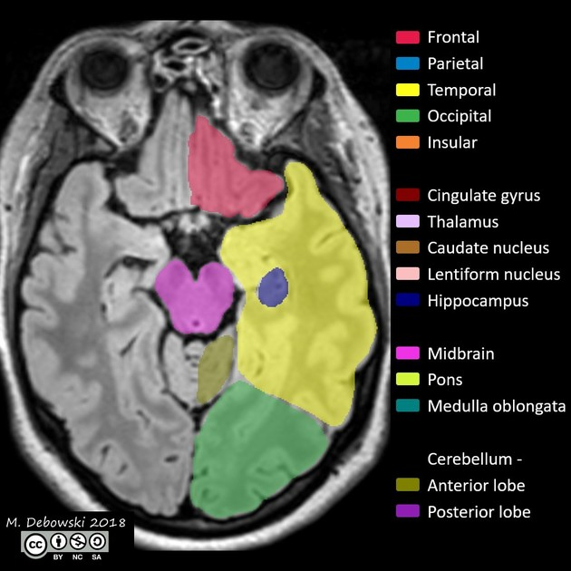
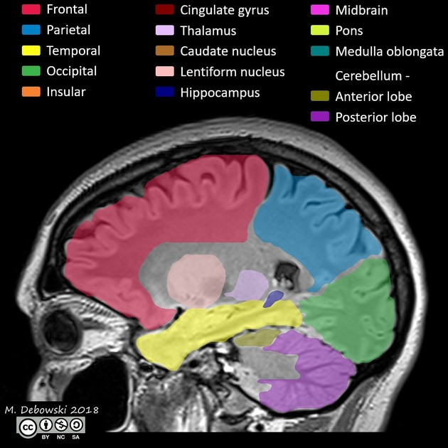

Prepare-se para dominar a análise da Anatomia Radiológica do Hipocampo! 🚨
Você está prestes a mergulhar em um dos tópicos mais essenciais e fascinantes da medicina!
Fique atento e pronto para explorar cada detalhe dessa incrível jornada radiológica!

